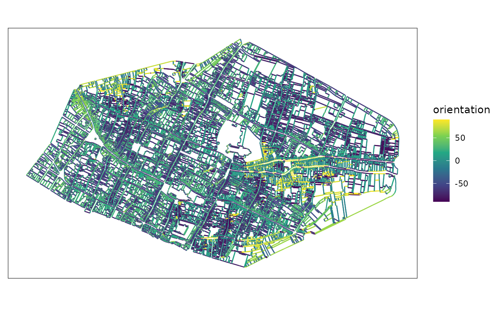
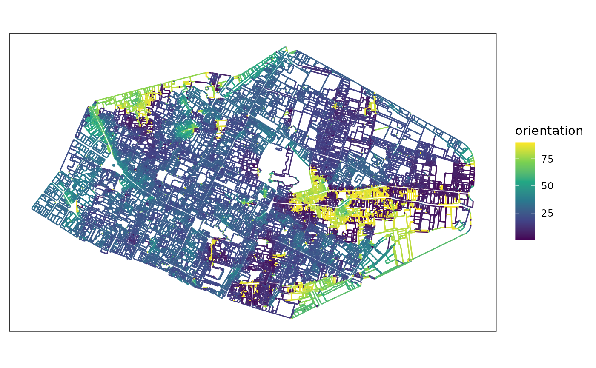

Computing orientations
orientations.RmdExtracting segments from sf
Extracting segments with morphal_geom_to_segment() can
be applied to polygon or linestring geometries. Default output consists
of the input sf composed of segments (i.e LINE as line composed of only
two points) in a MULTILINESTRING geometry.
# transform polygons as segments (lines)
mafa_geom_to_segment(sfobject = rouen_1827)
#> Simple feature collection with 10240 features and 1 field
#> Geometry type: MULTILINESTRING
#> Dimension: XY
#> Bounding box: xmin: 560973.9 ymin: 6927999 xmax: 563141.3 ymax: 6929327
#> Projected CRS: RGF93 v1 / Lambert-93
#> # A tibble: 10,240 × 2
#> rowid geometry[,1]
#> * <int> <MULTILINESTRING [m]>
#> 1 1 ((561754.2 6928994, 561759.5 6928992), (561759.5 6928992, 561756.2 692…
#> 2 2 ((561779.4 6929002, 561773.6 6928982), (561773.6 6928982, 561764.7 692…
#> 3 3 ((561732.2 6928970, 561735.3 6928967), (561735.3 6928967, 561741.4 692…
#> 4 4 ((561715.6 6928974, 561708.7 6928977), (561708.7 6928977, 561705.1 692…
#> 5 5 ((561605.9 6928902, 561603.4 6928896), (561603.4 6928896, 561592.8 692…
#> 6 6 ((561604.7 6928915, 561607.3 6928914), (561607.3 6928914, 561614 69289…
#> 7 7 ((561610.9 6928904, 561611.7 6928904), (561611.7 6928904, 561610 69289…
#> 8 8 ((561621 6928889, 561612.5 6928867), (561612.5 6928867, 561608.2 69288…
#> 9 9 ((561627.2 6928869, 561623 6928871), (561623 6928871, 561619.3 6928873…
#> 10 10 ((561628.3 6928906, 561621.3 6928890), (561621.3 6928890, 561616.4 692…
#> # ℹ 10,230 more rowsParameter to can provides LINESTRING output.
rouenline <- mafa_geom_to_segment(sfobject = rouen_1827, to = 'LINESTRING')
rouenline
#> Simple feature collection with 95799 features and 1 field
#> Geometry type: LINESTRING
#> Dimension: XY
#> Bounding box: xmin: 560973.9 ymin: 6927999 xmax: 563141.3 ymax: 6929327
#> Projected CRS: RGF93 v1 / Lambert-93
#> # A tibble: 95,799 × 2
#> rowid geometry
#> <int> <LINESTRING [m]>
#> 1 1 (561754.2 6928994, 561759.5 6928992)
#> 2 1 (561759.5 6928992, 561756.2 6928983)
#> 3 1 (561756.2 6928983, 561741.9 6928992)
#> 4 1 (561741.9 6928992, 561746.8 6928998)
#> 5 1 (561746.8 6928998, 561754.2 6928994)
#> 6 2 (561779.4 6929002, 561773.6 6928982)
#> 7 2 (561773.6 6928982, 561764.7 6928986)
#> 8 2 (561764.7 6928986, 561765.6 6928988)
#> 9 2 (561765.6 6928988, 561770.1 6929003)
#> 10 2 (561770.1 6929003, 561779.4 6929002)
#> # ℹ 95,789 more rowsParallelizing extraction
Computing of morphal_geom_to_segment() can be long and
it may be useful to apply parallel computing.
nbcores <- parallel::detectCores() - 1
rouensplit <- rouen_1827 |>
mutate(bloc1000 = 1:nrow(rouen_1827) %/% 1000) |>
group_by(bloc1000) |>
group_split()
rouenparall <- mclapply(X = rouensplit, FUN = mafa_geom_to_segment, mc.cores = nbcores)
rouenparall <- data.table::rbindlist(rouenparall) |>
st_as_sf() |>
select(-bloc1000)
# as LINESTRING
rouenparall <- rouenparall |>
st_cast(to = 'LINESTRING')Computing orientations
Compute orientations of segments with
mafa_segment_orientation(). The looking default parameters
is “N” for North, and results are in degrees on a semicircle
[-90;90].
orientations <- mafa_segment_orientation(sfsegments = rouenline)
orientations |>
ggplot() +
geom_sf(aes(color = orientation)) +
scale_color_viridis_c() +
theme_bw() +
theme(axis.ticks = element_blank(), axis.text = element_blank(), panel.grid = element_blank())
Compute orientations of segments with East looking and perpendicular parameters. The latter makes it possible to combine perpendicular orientations, with values in degrees recalculated in a quarter circle [0;90].
orientations <- mafa_segment_orientation(sfsegments = rouenline, looking = 'E', perpendicular = TRUE)
orientations |>
ggplot() +
geom_sf(aes(color = orientation)) +
scale_color_viridis_c() +
theme_bw() +
theme(axis.ticks = element_blank(), axis.text = element_blank(), panel.grid = element_blank())